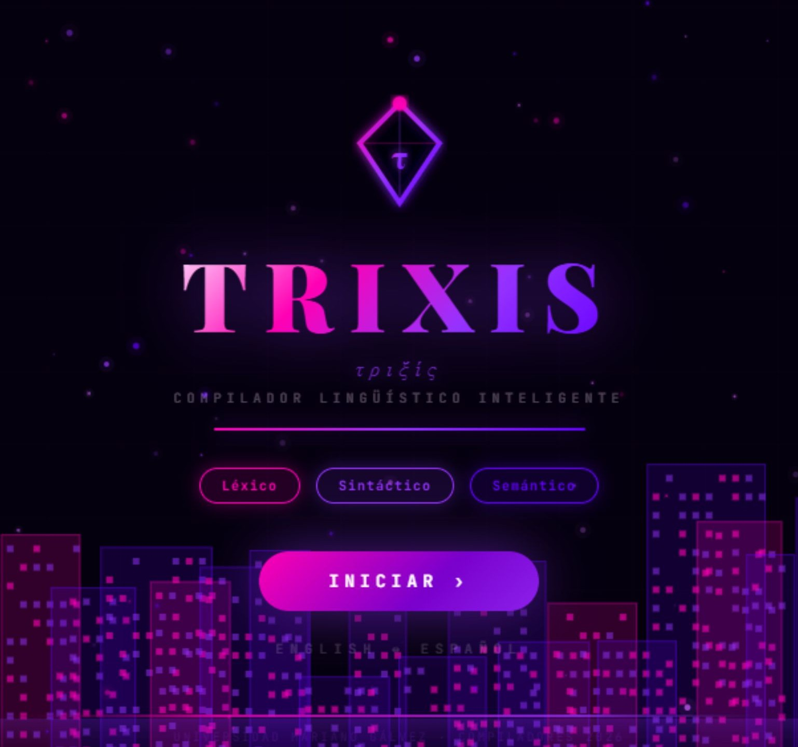
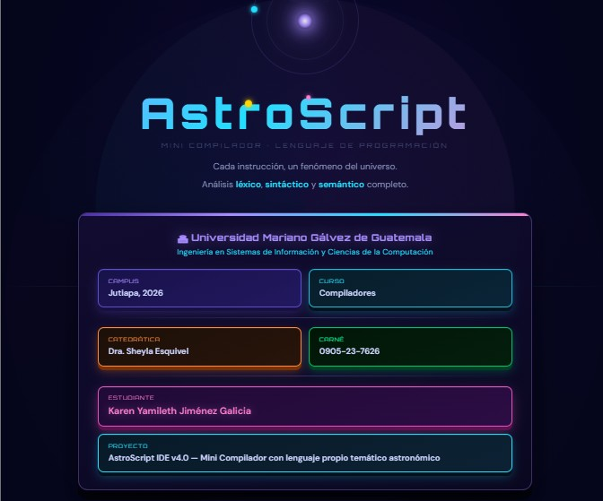
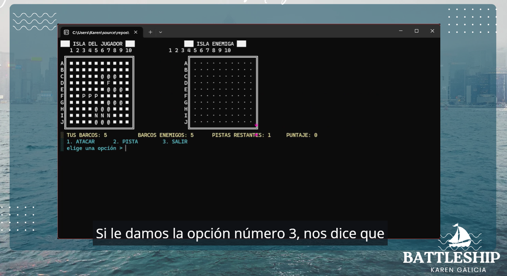

01 · quién soy
Biografía
Soy Maestra de Educación Infantil Intercultural y Licenciada en Psicología General por la Universidad Rafael Landívar, con 10 años de experiencia docente.
Actualmente imparto Ciencias Naturales, Psicología y Filosofía a nivel diversificado en el Colegio Genius Americano, en Jutiapa, Guatemala. Desde 2023 estudio la carrera de Ingeniería en Sistemas de la Información y Ciencias de la Computación en la Universidad Mariano Gálvez.
02 · lo que domino
Habilidades & intereses
- HTML5 & CSS3 semántico Frontend Avanzado
- Bootstrap 5 & diseño responsive Frontend Avanzado
- JavaScript & React Frontend Intermedio
- Modelado UML (casos de uso, clases, secuencia) Análisis Avanzado
- Bases de datos & BI (SQL Server, OLAP, ETL) Backend Intermedio
- Administración de servidores Linux Infraestructura Intermedio
03 · en lo que he trabajado
Proyectos & pasatiempos

TRIXIS
Compilador lingüístico bilingüe EN↔ES construido con React 18 y Vite. Incluye análisis léxico, sintáctico y semántico, un diccionario de más de 3,000 palabras y árboles de análisis en SVG.
Ver en GitHub
AstroScript
Lenguaje de programación propio con temática espacial, implementado en JavaScript/HTML con integración de ANTLR4, acompañado de manual técnico y manual de usuario.
Ver en GitHub